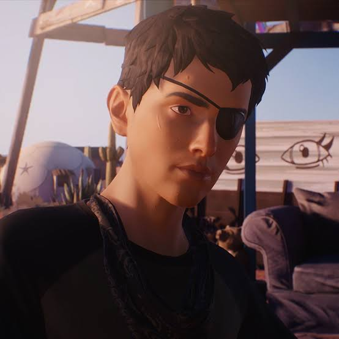

Sean Diaz
Sean é um adolescente mexicano-americano de 16 anos que, após um trágico acidente com seu pai,
tem que cuidar de seu irmão enquanto ele manifesta seus poderes

Características
| Qualidades |
Defeitos |
| Protetor |
Impulsivo |
| Independente |
Imaturo |
Criativo |
Introvertido |
Principais Conflitos
- Fuga da polícia
- Educação moral do irmão
- Solidão e perda
Ordem dos jogos:
- Life is Strange: Before the Storm (2017-2018)
- Life is Strange (2015)
- Life is Strange 2 (2018-2019)
- Life is Strange: True Colors (2021)
- Life is Strange: Double Exposure (2024/2025)
Para saber mais do jogo
clique aqui!
Site desenvolvido pelo aluno Marcelo Henrique do 2°TINF -IFTM Campus Patrocínio